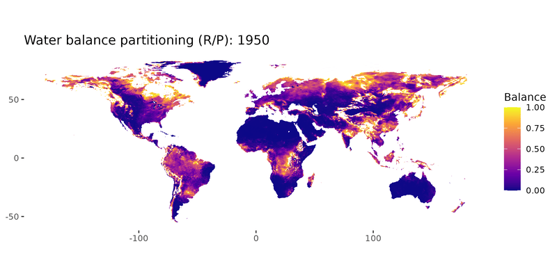

Introduction
This is a basic analysis to depict change ins the water balance partitioning globally, represented by runoff divided by precipitation (R/P). Annual values of P were calculated from GPCC data G at 0.25º from 1950 to 2019, they can be found in input/precipitation.nc. Annual values of R were calculated from ERA5-Land monthly averaged data from 1950 to 2019, it was regridded from 0.1º to 0.25º to match P data, they can be found in input/runoff.nc. This page shows the decadal average plots and the anomaly plot between the first and last decade of R/P.
Analysis
Animation
Animated Water Balance Partitioning (R/P) between 1950–2019, It show detailed transitions between for each year.
Decadal Analysis
Decadal average plots for the 7 decades between 1950 to 2019. I shows the general changes occurring in every decade.


Anomaly
Anomaly: Last Decade minus First Decade (without outliers)